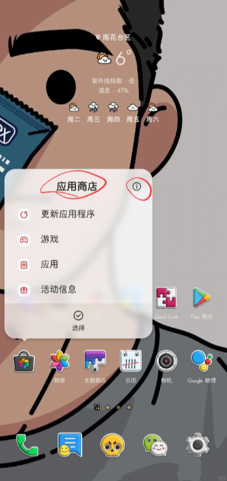

三星快速分享四个容易翻车的细节
传输中锁屏会不会断、取消按钮藏在哪、敏感文件怎么传、设备名撞了怎么办——四个踩过的坑一次说清，日常用快速分享基本不会再慌。
开头：看着简单，其实有几个坑
三星的快速分享（官网）上手门槛几乎为零，两台手机碰一下就能传文件，但越是这种"开箱即用"的体验，越容易藏着反直觉的细节。我自己用了小半年，踩了好几次才把几个关键习惯固定下来——你要是刚接触这个功能，下面这四个坑建议提前知道，省得像我那样传错了才反应过来。
坑一：传输中锁屏或切后台，总以为断了
第一次用快速分享传大文件，10 个 G 的视频选完点发送，我就锁屏放兜里干别的去了。过了十来分钟掏出来一看，发送界面已经不在了，通知栏也没看到任何关于传输的提示——我当时第一反应就是：这玩意儿跟很多国产厂一样，切后台就被杀了，白传了。
症状就是这么简单：界面没了，你找不到任何进度提示，只能干等着或者索性关掉。
原因其实很简单——官方从设计上就把传输和界面解耦了。传输启动之后，前台页面只是一个"控制面板"，真正的数据传输走的是系统后台通道，锁屏、切应用、甚至重启手机（只要不清理后台）都不会打断正在进行的传输。通知栏里其实会出现一条状态条，只是那条东西被我其他通知淹没了没注意到而已。
解法也直接：传输启动后不用盯着屏幕，想确认进度就下拉通知栏找那条快速分享的状态通知，里面能看实时状态、随时取消、还能点回发送面板，完全不用守在界面上。跟 iPhone 互传时有个小插曲——传输期间你的设备可能暂时断开 Wi-Fi，正在加载的网页会卡一下，传完自动恢复，属于预期行为不是故障。

坑二：想取消传输，找不到停的地方
发错了文件或者点错了设备，这时候想停——我第一次遇到时急得满头汗，发送界面里没看到任何"取消"按钮，长按设备名也没反应，眼睁睁看着进度条往前走。
症状就是：界面上没有明显的停止入口，越急越找不到。
原因是快速分享的取消设计本身就挺反直觉的——官方的方案不是加个红色的"取消"按钮，而是再点一次你刚才选的那个设备。不管传输还没开始选完就点了设备，还是已经跑了一半的大文件，再次点按同一个设备就能中止。已经离开发送页的话，从通知栏找到那条传输通知，里面同样有取消入口。
中止之后双方都会回到传输前的状态，已经传了一半的部分不会残留在对方相册里变成"半张照片"。我试过一次——传了 60% 的视频中途停掉，对方那边确实什么都没留下，这点还是挺良心的。
预防比取消更省事：多选文件发送前先数一眼已选数量，选择列表会显示总数；给不太熟的人发敏感内容，提前走私密共享模式，就算发错了对方也没法随意保存转发。
坑三：发敏感文件时忘了开私密共享
有一次给同事发合同扫描件，直接用快速分享发出去了。发完才反应过来——对方拿到文件可以随手转发给任何第三方，我这边没有任何抓手。快速分享的普通模式默认就是"发出去不归你管"，这跟很多人以为的"三星自带的安全功能就等于私密"是个普遍误解。
症状不是"传不过去"，而是传完之后你才意识到风险已经放出去了。
原因是快速分享里有两种模式：普通传输和私密共享，前者是默认选项，后者需要手动打开。普通模式下接收方可以随意保存、转发、截图，你完全管不着；而私密共享会给文件加一层保护壳——你设有效期（默认 2 天，最长 7 天），过了期限对方打不开，而且接收方不能保存、不能转发、也不能截图。官方特别标注了，如果你担心附近分享或快速分享传敏感信息，建议改用私密共享。
解法很明确：合同、证件照、内部报表这类"泄露即事故"的东西，发送前先打开私密共享开关再选设备。日常给家人发生活照、给同事发协作稿这种不需要留限制的，普通模式更顺手——别把所有传输都搞得不可保存，那反而给正常沟通添堵。
关于私密共享的有效期设置、不同版本的约束差异这些细节，在quickshare文档里有专门的条目，遇到边界问题翻一下就能对上。
坑四：设备名撞了，传错人不知道
办公室里两台一模一样的 S24，我发文件选了名字叫"S24"的设备，结果对方根本没收到——另一个同事在旁边举手说他的"S24"收到了。两个人默认名一模一样，接收方列表里根本分不出来。
症状就是：传输完成了但你要的人没拿到，或者更糟——敏感内容传到了不该去的地方。
原因是快速分享的默认设备名通常取机型名或者系统默认字符串，同型号的手机撞名几乎是必然的，无意义的代号（比如一串英文加数字）也让接收方猜不出哪台是你。
改起来很快：系统设置里搜索"快速分享"就能找到设备名称字段，直接编辑就行。我的做法是统一加场合前缀——"老王的S24""会议室平板"，多设备家庭就用"王家-爸爸手机""王家-客厅平板"这种格式，接收方一眼就能锁定。还有个细节：设备名会广播给附近所有人看，别在里面写工号、门牌这类敏感信息。如果你的设备没预装快速分享功能，可以从官方下载拿到安装包。

防坑清单
把上面几个坑揉成一张速查表，用的时候过一眼就不会漏：
- 传输启动后不用盯着屏幕，看通知栏状态就行，锁屏切后台都不影响
- 取消传输 = 再点一次同一个设备，或者通知栏里停
- 敏感内容先开私密共享再发，有效期和保存限制是两层保险
- 设备名加场合前缀，别让"S24"撞名变成事故
结尾
知道这些坑之后，快速分享其实相当省心——传输稳、速度快、跨设备兼容性也不错，只是默认设置里藏着几个容易忽略的细节。花十分钟把这几个习惯固定下来，日常用着就不会再手忙脚乱了。
我把这套整理的资料同步到了三个仓库方便按需查阅：维护最齐全的版本在GitHub的 APK 仓库，国内网络环境下直接翻Gitee镜像更顺畅，GitCode上也有一份备份——三个地址随便挑哪个方便就用哪个。